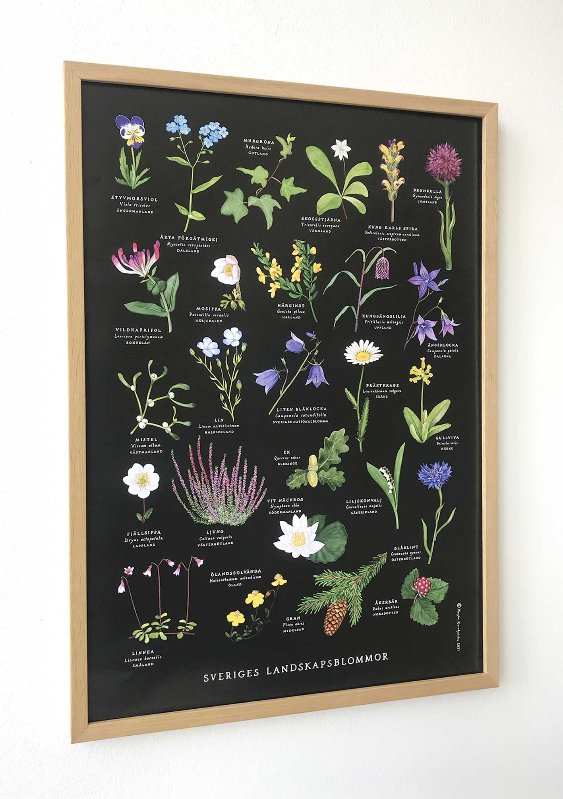
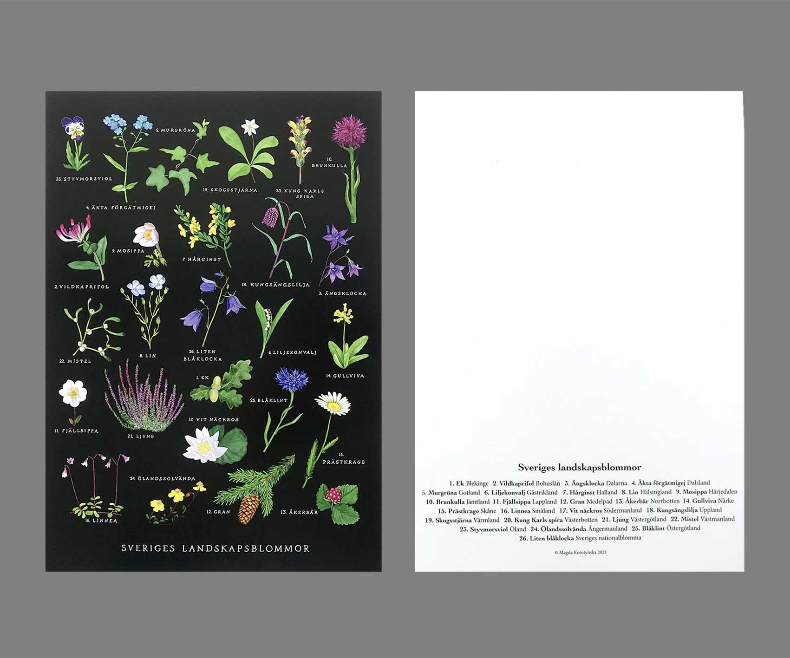
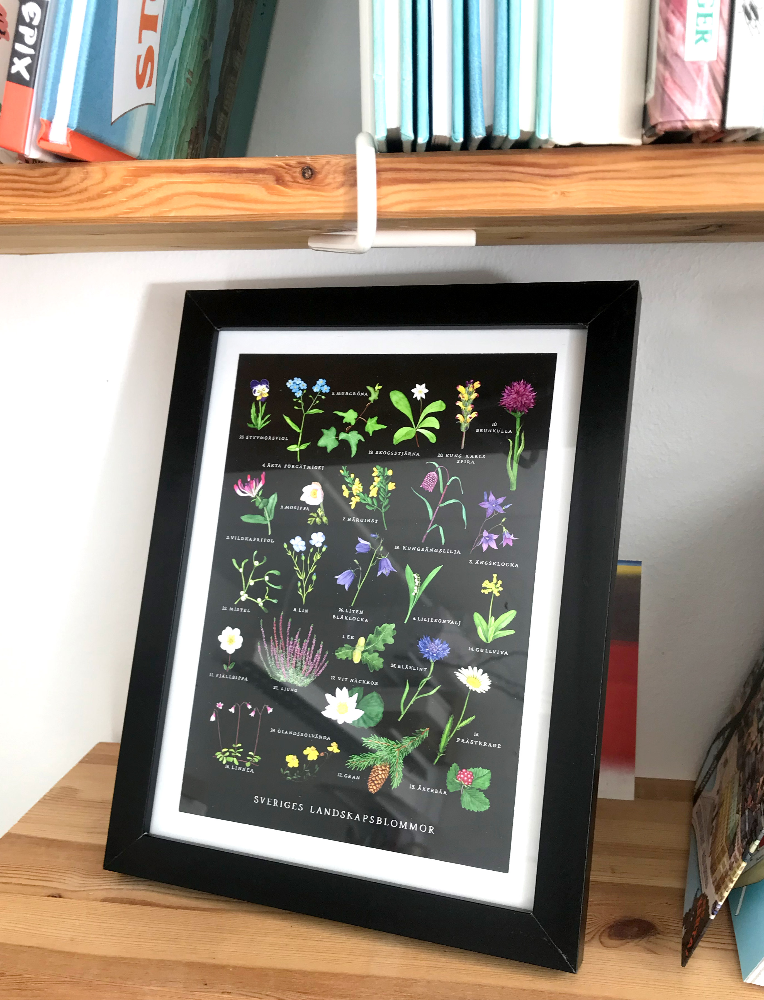
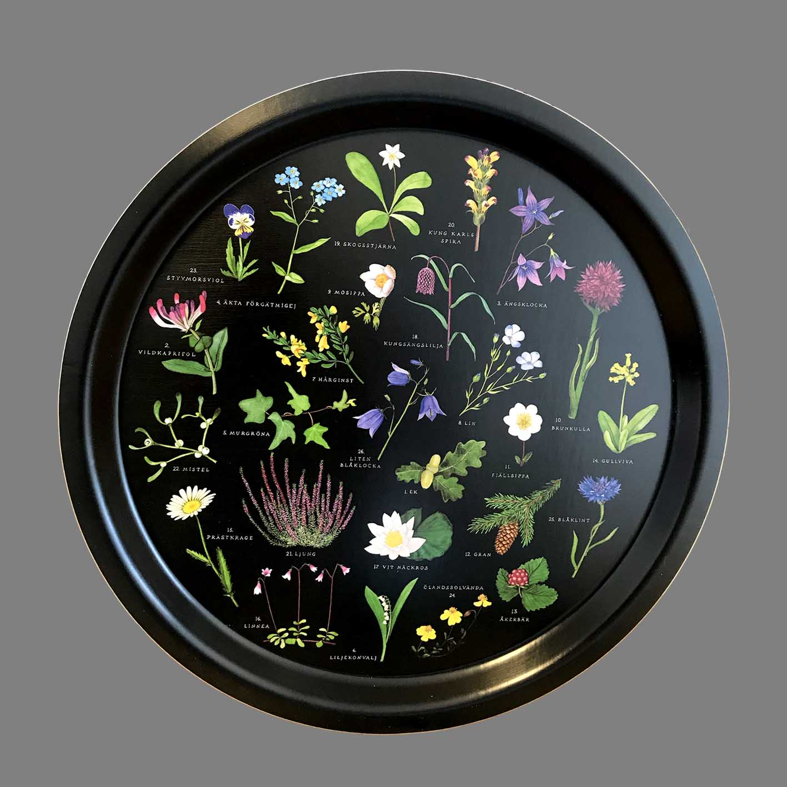
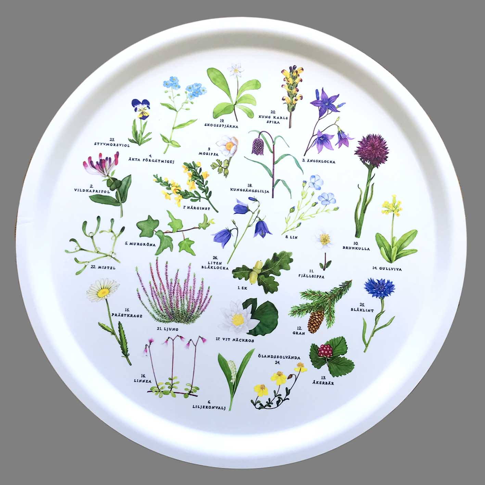
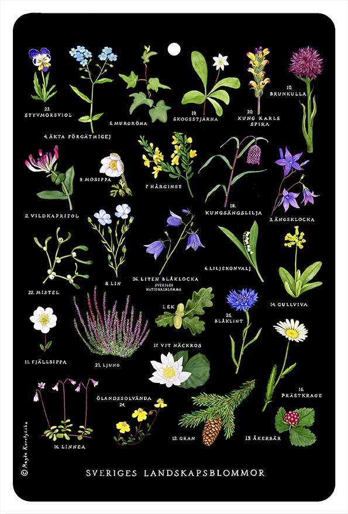

Sveriges landskapsblommor
Affisch
Inramad affich
Kort
Inramad kort
Bricka, svart
Bricka, vit
Skärbräda
1. Affisch med svenska landskapsblommor. 50 x 70 cm
Tryckt på GalerieArt Silk 170g.
Pris: 150 SEK + porto
2. Kort med svenska landskapsblommor med respektive landskap på baksidan, A5
Tryckt på Invercote G 300g
Pris: 20 SEK + porto
3. Kort med svenska landskapsblommor med respektive landskap på baksidan, A4
Tryckt på Invercote G 300g
Pris: 40 SEK + porto
4. Bricka med svenska landskapsblommor på svart botten. Ø 31 cm
Gjord av olika skikt laminat och björkfaner. Återvinningsbar. Tål maskindisk upp till 95°C
Pris: 180 SEK + porto
5. Bricka med svenska landskapsblommor på vit botten. Ø 38 cm
Gjord av olika skikt laminat och björkfaner. Återvinningsbar. Tål maskindisk upp till 95°C
Pris: 230 SEK + porto
6. Skärbräda med svenska landskapsblommor på svart botten. 19,5 x 29,5 cm.
Gjord av MDF. Värmebeständig upp till 130° C. Endast handtvätt. Förvara torrt!
Pris: 180 SEK + porto
7. Bordstablett med svenska landskapsblommor på svart botten. 40 x 30 cm
Gjord av PVC.
Pris: 60 SEK + porto
Beställ så här
Hör av dig via e-post vilken produkt du är intresserad av så svarar jag dig så snart som möjligt angående fraktkostnader.
magda@artmagda.se
Swish 123 094 27 22